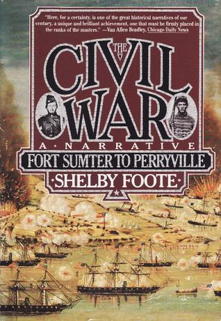

"The Civil War, Vol. 1: Fort Sumter to Perryville"
- Read on 2012-01-01
- Rating: ️️️️️
- Format: 🎧 (42 hours 58 minutes)
I enjoy historical non-fiction, but this dragged a bit for me. It gives such a thorough review of the Civil War, in such a great narrative style, however, that I have to give it credit. I have since gone back to read other random bits about the Civil War (elsewhere) and been nonplussed at how much I had already read in this book. Again (as all of my Good Reads reviews seem to be lately), this is a trilogy, and I'm slowly trudging through the second volume.
- Prior: The Alloy of Law
- Next: The Three Musketeers